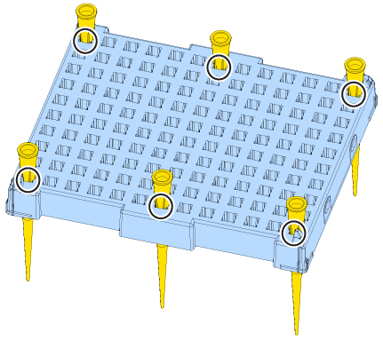
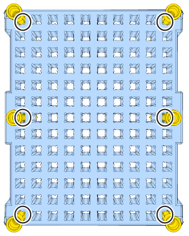

Remove the tray from the loader (Success: Request is Complete should be present on screen).
Press Ok on the request is complete message.
Note: The tip feeder tray door will remain open. Do not press the tip feeder button if running additional exerciser routines.
Performing the EmptyTrayBuffer/TrayWaste Tray Exerciser
Important: Next buffer position must be empty.
Press the tip feeder button if needed and place a single empty tray in the loader.
Select
REQUEST.
Tray will move from: Loader > Empty Tray > Waste (Request Complete should be present on screen).
Press Ok on the request is complete message.
Note: The tip feeder tray door will remain open. Do not press the tip feeder button if running additional exerciser routines.
Performing the TakeTipOnAlignmentPosition Tip Exerciser
Important: Tray carrier position must be empty.
Select the "Use Sample Pipettor" desired from the drop-down menu (Aliquot or Precision).
Press the tip feeder button if needed and place a tray in the loader with
six tips in the locations outlined below:Figure 131: Tip Tray with Tips in Position

Figure 132: Tip Tray with Tips in Position (Top View)

Select
REQUEST.
Tray will move from: Loader > Carrier.
Selected Sample Pipettor will pick up all six tips from the rack and discard into tip waste chute.
Tray will move from: Carrier > Empty > Waste. ("Request Complete" should be present on screen).
Press Ok on the request is complete message.
Note: The tip feeder tray door will remain closed.
Performing the TakeAllTips Tip Exerciser
Important: Tray carrier position must be empty.
Select the "Use Sample Pipettor" desired from the drop-down menu (Aliquot, Precision, or Simultaneous (both)).
Press the tip feeder button if needed and place up to four
full trays in the loader.
Designate the number of trays to empty during the exerciser in the "Use Trays" field.
Select
REQUEST.
Tray will move from: Loader > Carrier.
Selected Sample Pipettor(s) will pick up all tips from the rack and discard into tip waste chute.
Tray will move from: Carrier > Empty > Waste. (Request Complete should be present on screen).
Press Ok on the request is complete message.
Note: The tip feeder tray door will remain open. Do not press the tip feeder button if running additional exerciser routines.